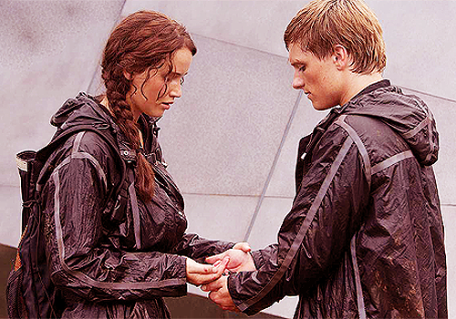
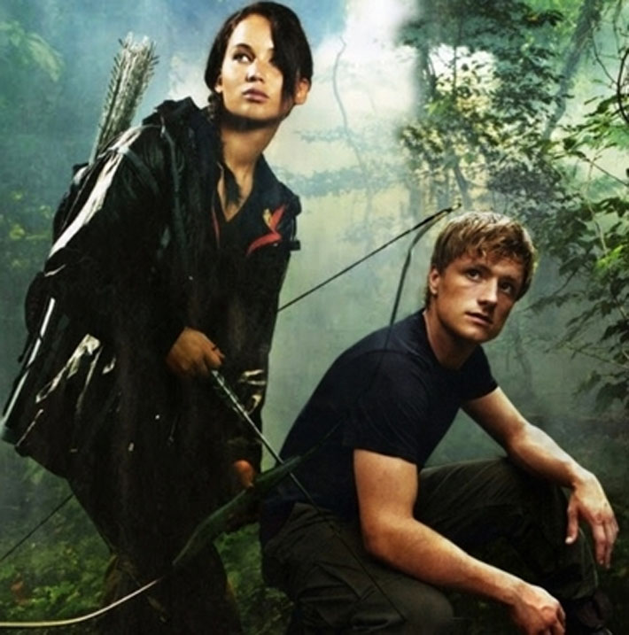

My Favorite Part
SPOILER ALERT: My favorite part of the book was when Katniss and Peeta had just killed the last tribute, Cato. They were supposed to win, but that’s when the Capital decided to change the rules back to normal, and only one of them could actually win. They were shocked to hear the news, and couldn’t even think of killing each other. That’s when Katniss got some poisonous berries called nightlock, which can kill you if digested in seconds. She gave some to Peeta, and got some herself, and said to eat them on the count of three. That’s when the capital intervened, and told them to stop both of them could win. This is my favorite part because it is the perfect amount of love, and rebellion. Katniss is showing everyone in Panam that the Capital isn’t as strong and powerful as they think they are. And that she would actually be willing to die then kill Peeta, because deep down she does have some feelings towards him.
Recommendation
I would recommend this book to anyone who likes an action packed series. Anyone that likes science fiction, romance, or action would absolutely love the Hunger Games. It is a book full of unexpected twists and turns that will keep you on the edge of your seat, and make you not want to put the book down. You will fall in love with the characters, and be torn between wether to be team Peeta or team Gale. I encourage you to read this book if you are a teenager or older.

Katniss Everdeen: "Any last advice?"
Haymitch Abernathy: "Stay alive."